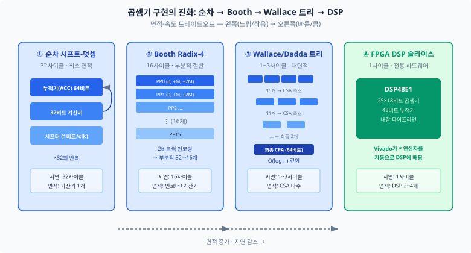
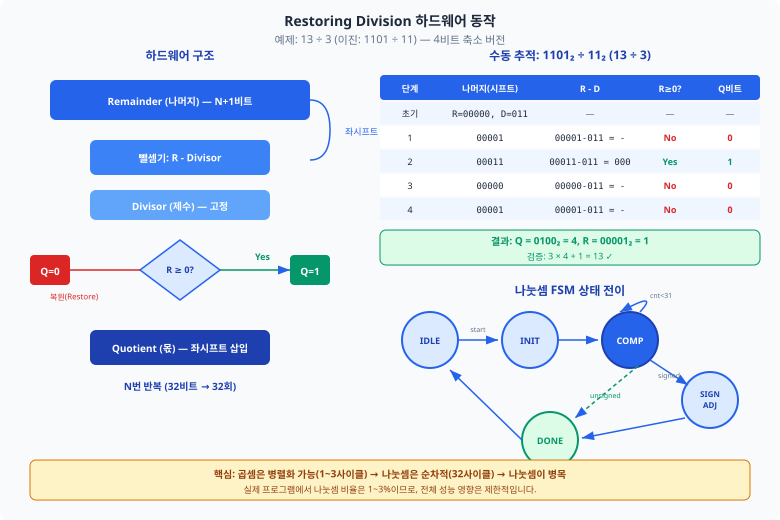
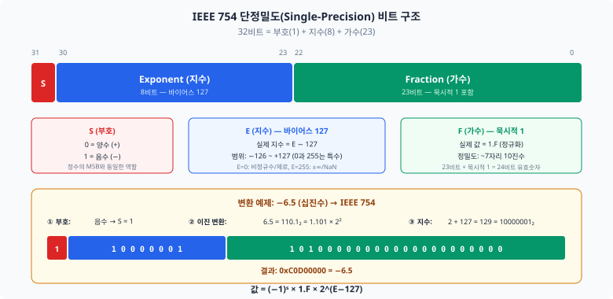
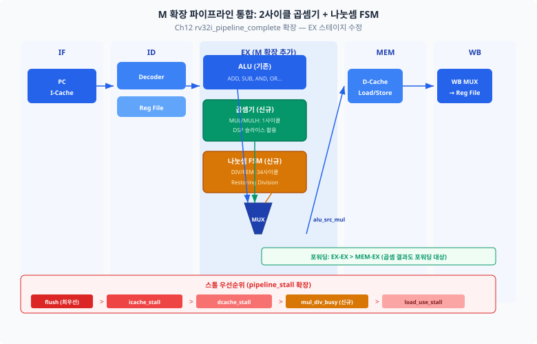

Ch12까지 완성한 RV32I 파이프라인은 정수 덧셈, 뺄셈, 논리 연산만 하드웨어로 지원합니다. 곱셈이나 나눗셈은 소프트웨어 루프로 수십~수백 사이클이 소요되지만, M 확장 하나만 추가하면 단 1~36사이클로 줄일 수 있습니다. 이 챕터에서는 M 확장(정수 곱셈·나눗셈)을 ISA와 하드웨어 수준에서 완성하고, F 확장(부동소수점)과 Zicntr(성능 카운터 표준화)를 개념적으로 탐구합니다.
Ch12에서 완성한 5단계 파이프라인 프로세서에 "축하합니다!"라고 말씀드렸던 것을 기억하시나요?
그 프로세서는 ADD, SUB, AND, OR 같은 기본 정수 연산을 1사이클에 처리합니다.
그런데 실제 프로그램에서는 곱셈과 나눗셈이 빈번하게 등장합니다.
행렬 연산, 해시 함수, 신호 처리 — 이 모든 것에 곱셈이 필수입니다.
RV32I 기본 명령어 세트만으로 곱셈을 수행하려면
ADD를 반복하는 소프트웨어 루프가 필요합니다.
32비트 × 32비트 곱셈은 최악의 경우 32번의 덧셈-시프트 루프, 즉 약 100사이클 이상이 소요됩니다.
M 확장을 추가하면 이를 하드웨어가 직접 처리하여 1~36사이클로 단축합니다.
Ch23에서 슈퍼스칼라와 비순차 실행으로 IPC를 높이는 방법을 탐구했습니다. 이번 챕터는 접근법이 다릅니다 — 새로운 명령어를 추가하여 기존에 수십~수백 사이클 걸리던 연산을 단일 명령어로 처리함으로써 성능을 개선합니다. Ch23의 "파이프라인 구조 개선"과 이 챕터의 "ISA 확장"은 상호 보완적인 최적화 전략입니다.
이 챕터의 구성은 다음과 같습니다. 24.1절에서 M 확장의 ISA 정의와 하드웨어 구현을 다룹니다. 24.2절에서 F 확장(부동소수점)의 기초를 "5분 읽기" 수준으로 소개합니다. 24.3절에서 Zicntr 성능 카운터 표준화를 Ch18의 CSR과 연결합니다. 24.4절에서 곱셈기를 파이프라인으로 확장하는 미니 설계 과제를 수행합니다.
RISC-V의 M 확장(RV32M)은 정수 곱셈과 나눗셈을 위한 8개 명령어를 정의합니다.
모두 R-type 형식(funct7 + rs2 + rs1 + funct3 + rd + opcode)이며,
opcode는 0110011(OP)로 기본 ALU 명령어와 동일하고,
funct7 = 0000001로 구분합니다.
M 확장의 핵심은 32비트 × 32비트 곱셈이 64비트 결과를 만든다는 점입니다. 그러나 RV32의 레지스터는 32비트이므로, 결과의 하위 32비트와 상위 32비트를 별도 명령어로 가져옵니다.
| 명령어 | funct3 | 동작 | 결과 위치 |
|---|---|---|---|
MUL rd, rs1, rs2 |
000 | rs1 × rs2 (부호 무관) | 하위 32비트 |
MULH rd, rs1, rs2 |
001 | signed(rs1) × signed(rs2) | 상위 32비트 |
MULHSU rd, rs1, rs2 |
010 | signed(rs1) × unsigned(rs2) | 상위 32비트 |
MULHU rd, rs1, rs2 |
011 | unsigned(rs1) × unsigned(rs2) | 상위 32비트 |
DIV rd, rs1, rs2 |
100 | signed(rs1) ÷ signed(rs2) | 몫 |
DIVU rd, rs1, rs2 |
101 | unsigned(rs1) ÷ unsigned(rs2) | 몫 |
REM rd, rs1, rs2 |
110 | signed(rs1) % signed(rs2) | 나머지 |
REMU rd, rs1, rs2 |
111 | unsigned(rs1) % unsigned(rs2) | 나머지 |
C 언어에서 int a = b * c;를 컴파일하면 MUL 한 명령어면 충분합니다.
하위 32비트만 필요하기 때문입니다. 그러나 long long result = (long long)b * c;처럼
64비트 전체 결과가 필요하면 MUL + MULH 두 명령어를 연속 실행합니다.
하드웨어는 내부적으로 64비트 곱셈을 한 번만 수행하고,
MUL은 하위 32비트를, MULH는 상위 32비트를 선택하여 rd에 기록합니다.
오버플로 검출에도 MULH가 유용합니다.
MUL 결과가 32비트에 담길 수 있는지 확인하려면,
MULH 결과가 0(양수)이거나 -1(음수)인지 검사하면 됩니다.
# 64비트 전체 결과 (C: long long result = (long long)a * b)
MUL x10, x5, x6 # x10 = 하위 32비트
MULH x11, x5, x6 # x11 = 상위 32비트
# 결과: {x11, x10} = 64비트 곱
# 오버플로 검출
MUL x10, x5, x6 # x10 = a * b (하위 32비트)
MULH x11, x5, x6 # x11 = 상위 32비트
SRAI x12, x10, 31 # x12 = x10의 부호 확장
BNE x11, x12, overflow_handler # 상위 비트 ≠ 부호 확장 → 오버플로
나눗셈에는 두 가지 특수 케이스가 있으며, RISC-V는 예외를 발생시키지 않고 명확한 결과를 정의합니다.
DIV는 -1(모든 비트 1), REM은 rs1 값을 반환합니다. DIVU는 0xFFFFFFFF, REMU는 rs1을 반환합니다.DIV는 -231을, REM은 0을 반환합니다.ISA가 "무엇을" 정의한다면, 하드웨어 구현은 "어떻게"에 해당합니다. 32비트 곱셈기와 나눗셈기를 설계하는 여러 방법이 있으며, 각각의 면적·타이밍·사이클 수 트레이드오프가 다릅니다.
이진수 곱셈의 기본 원리는 초등학교 필산과 동일합니다. 승수(multiplier)의 각 비트에 대해 피승수(multiplicand)를 시프트한 후, 모든 부분곱(partial product)을 더합니다. 32비트 곱셈이면 부분곱이 32개 생성됩니다.
곱셈기의 진화 단계를 정리하면 다음과 같습니다.

| 방식 | 부분곱 수 | 사이클 | 면적 | 비고 |
|---|---|---|---|---|
| 순차 시프트-덧셈 | 32개 | 32 | 최소 | 교육용, 느림 |
| Booth Radix-4 | 16개 | 16 | 중간 | 부분곱 수 절반 |
| Wallace/Dadda 트리 | - | 1~3 | 대형 | 병렬 축소 |
| FPGA DSP 슬라이스 | - | 1 | 전용 HW | Vivado 자동 매핑 |
나눗셈은 곱셈보다 본질적으로 느립니다. 곱셈은 모든 부분곱을 병렬 생성할 수 있지만, 나눗셈은 각 자릿수의 몫이 이전 단계의 나머지에 의존하므로 순차적입니다.

Vivado에서 32×32 곱셈은 DSP48E1 4개로 추론됩니다. DSP48E1의 곱셈기 입력은 25×18비트이므로, 32비트를 18+14로 분할하여 4개의 부분곱(partial product)을 병렬 계산한 뒤 내장 가산기로 합산합니다. 나눗셈기는 DSP를 사용하지 않고 순수 로직으로 구현하면 약 1,200 LUT가 소요됩니다. Basys 3(XC7A35T)에는 DSP48E1이 90개, LUT가 20,800개 있으므로 M 확장 추가는 전체 리소스의 약 5~6%만 차지합니다.
다음은 M 확장 곱셈/나눗셈 유닛의 핵심 구현입니다.
곱셈은 Vivado의 DSP 매핑을 활용하기 위해 * 연산자를 사용하고(1사이클),
나눗셈은 Restoring Division FSM으로 32반복(총 36사이클)에 걸쳐 수행합니다.
// M 확장 곱셈/나눗셈 유닛 — 핵심 인터페이스
module mul_div_unit (
input logic clk,
input logic rst_n,
input logic start, // EX 스테이지에서 시작 신호
input logic [2:0] funct3, // 연산 종류 선택
input logic [31:0] operand_a, // rs1 값
input logic [31:0] operand_b, // rs2 값
output logic [31:0] result, // 결과 (rd에 기록)
output logic ready, // 1이면 결과 유효
output logic busy // 1이면 연산 진행 중
);
// 곱셈: 1사이클 (DSP 슬라이스 활용)
logic [63:0] mul_result_ss, mul_result_su, mul_result_uu;
assign mul_result_ss = $signed(operand_a) * $signed(operand_b);
assign mul_result_su = $signed(operand_a) *
$signed({1'b0, operand_b}); // signed×unsigned (MULHSU)
// ... (전체 코드는 하단 전체 소스 코드 섹션 참조)
endmodule
M 확장이 정수 곱셈·나눗셈을 하드웨어로 지원한다면,
F 확장은 부동소수점(floating-point) 연산을 하드웨어로 지원합니다.
F 확장은 IEEE 754 단정밀도(single-precision, 32비트) 부동소수점 명령어를 정의하며,
32개의 전용 부동소수점 레지스터(f0~f31)를 추가합니다.
이 절은 "5분 읽기" 수준의 개념 소개입니다. F 확장의 하드웨어 구현(FPU 설계)은 이 교재의 범위를 넘어서며, 여기서는 IEEE 754 형식의 이해와 SW/HW 트레이드오프만 다룹니다. RV32I 파이프라인에 F 확장을 추가하려면 레지스터 파일, 데이터패스, 제어 유닛의 대규모 수정이 필요하므로, 개념적 이해에 집중하겠습니다.
1.1011 × 25처럼 이진 유효숫자와 2의 지수로 실수를 표현합니다.
IEEE 754 단정밀도는 32비트를 다음과 같이 배분합니다.

| 필드 | 비트 | 범위 | 역할 |
|---|---|---|---|
| 부호(S) | [31] | 0 또는 1 | 0 = 양수, 1 = 음수 |
| 지수(E) | [30:23] | 0~255 | 바이어스 127을 빼면 실제 지수 (-126 ~ +127) |
| 가수(F) | [22:0] | 0 ~ 223-1 | 정규화: 항상 1.xxxxx로 시작 (1은 묵시적) |
1 10000001 10100000000000000000000 = 0xC0D00000| 항목 | SW 에뮬레이션 (soft-float) | HW 구현 (F 확장) |
|---|---|---|
| 성능 | FADD: ~50사이클, FMUL: ~80사이클 | FADD: 3~5사이클, FMUL: 3~5사이클 |
| 면적 | 추가 HW 없음 | FPU 추가 (~3,000 LUT + DSP 2개) |
| 전력 | CPU 연산으로 소비 | 전용 유닛으로 효율적 |
| 적합 용도 | FP 연산이 드문 경우 | DSP, 제어 루프, 과학 계산 |
구체적으로, 부동소수점 가산기 1개는 약 800 LUT, 곱셈기 1개는 DSP 2개를 소비합니다. 최소한의 FPU(가산기 + 곱셈기 + 비교기 + 변환기)를 구현하면 약 3,000 LUT + DSP 2개가 필요하며, 이는 Basys 3 전체 LUT(20,800)의 약 15%에 해당합니다. 파이프라인 프로세서와 캐시까지 포함하면 FPGA 리소스가 부족해지므로, Basys 3에서는 M 확장까지가 현실적인 목표입니다.
Ch18에서 mcycle(사이클 카운터)과 minstret(실행 명령어 카운터)
CSR을 이미 구현했습니다. Zicntr(Counter) 확장은
이 두 카운터를 모든 RISC-V 구현체에서 표준 인터페이스로 보장하는 확장입니다.
프로세서 설계자나 소프트웨어 개발자가 "이 프로그램이 얼마나 빠른가?"를 측정하려면
하드웨어 수준의 정밀한 카운터가 필수입니다.
소프트웨어 타이머(예: clock() 함수)는 OS 스케줄링에 의한 노이즈가 크지만,
mcycle은 프로세서 클럭 사이클 단위로 정확하게 측정합니다.
minstret은 실제로 커밋된 명령어 수를 세므로,
두 카운터의 비율이 IPC(Instructions Per Cycle) = minstret ÷ mcycle입니다.
Zicntr가 별도 확장으로 분리된 이유는 간단합니다. 매우 작은 마이크로컨트롤러(예: 보안 칩)에서는 성능 카운터 자체가 보안 위험이 될 수 있습니다. 타이밍 사이드 채널 공격(timing side-channel attack)에 카운터가 악용될 수 있기 때문입니다. 따라서 RISC-V는 카운터를 선택적 확장으로 분리하되, 구현하는 경우 표준 인터페이스를 따르도록 합니다.
Zicntr 확장은 사용자 모드에서 카운터를 읽기 위한 의사 명령어(pseudo-instruction)를 정의합니다. 실제로는 CSR 읽기 명령어로 변환됩니다.
| 의사 명령어 | 실제 명령어 | CSR 주소 | 설명 |
|---|---|---|---|
RDCYCLE rd |
CSRRS rd, 0xC00, x0 |
0xC00 (cycle) | 사이클 카운터 하위 32비트 |
RDCYCLEH rd |
CSRRS rd, 0xC80, x0 |
0xC80 (cycleh) | 사이클 카운터 상위 32비트 |
RDINSTRET rd |
CSRRS rd, 0xC02, x0 |
0xC02 (instret) | 명령어 카운터 하위 32비트 |
RDINSTRETH rd |
CSRRS rd, 0xC82, x0 |
0xC82 (instreth) | 명령어 카운터 상위 32비트 |
Ch18에서 구현한 mcycle(0xB00)과 minstret(0xB02)은 M-모드 CSR이고,
위 표의 cycle(0xC00)과 instret(0xC02)은 U-모드 읽기 전용 미러(shadow)입니다.
CSRRS rd, csr, x0은 x0가 항상 0이므로 "CSR을 읽되 쓰지 않는" 패턴입니다.
이것이 Ch18에서 배운 CSRRS의 실전 활용입니다.
Ch18에서 구현한 CSR을 활용하여 IPC(Instructions Per Cycle)를 측정하는 코드입니다.
소프트웨어에서 구간 측정을 수행합니다.
M 확장의 DIV로 정수 IPC를 직접 계산할 수 있습니다.
# IPC 측정 루틴 (Ch18 CSR + Ch24 M 확장 활용)
RDCYCLE x10 # = CSRRS x10, 0xC00, x0 — 시작 사이클
RDINSTRET x11 # = CSRRS x11, 0xC02, x0 — 시작 명령어 수
# === 측정 대상 코드 시작 ===
# 예: 배열 합산 루프
ADDI x5, x0, 0 # sum = 0
ADDI x6, x0, 100 # count = 100
loop:
LW x7, 0(x8) # data 로드
ADD x5, x5, x7 # sum += data
ADDI x8, x8, 4 # 포인터 증가
ADDI x6, x6, -1 # count--
BNE x6, x0, loop # count != 0이면 반복
# === 측정 대상 코드 끝 ===
RDCYCLE x12 # 종료 사이클
RDINSTRET x13 # 종료 명령어 수
SUB x14, x12, x10 # 경과 사이클 = 종료 - 시작
SUB x15, x13, x11 # 실행 명령어 수 = 종료 - 시작
# IPC = x15 / x14 (M 확장으로 나눗셈 가능!)
DIV x16, x15, x14 # IPC 정수 부분
REM x17, x15, x14 # IPC 소수 부분 (나머지)
# 예: 500명령어 / 420사이클 → IPC=1, 나머지=80 → 약 1.19
위 예제에서 100회 루프의 명령어 수는 5×100 = 500개입니다. Ch12의 파이프라인(CPI ≈ 1.2)에서 실행하면 약 600사이클이 예상되므로, IPC ≈ 500/600 ≈ 0.83입니다. 포워딩이 잘 동작하면 IPC가 0.9 이상으로 개선됩니다. 이처럼 성능 카운터는 최적화의 효과를 수치로 검증하는 도구입니다.
Ch15에서 구현한 성능 카운터(cycle_cnt, instr_cnt,
icache_miss_cnt, dcache_miss_cnt)도 Zicntr의 정신을 따른 것입니다.
표준화된 카운터 덕분에 프로파일링 도구(perf, gprof)가
특정 하드웨어에 종속되지 않고 동작할 수 있습니다.
다음 챕터(Ch25)에서 다룰 멀티코어 환경에서는
각 코어가 독립적인 mcycle/minstret 카운터를 갖고 있어,
코어별 성능을 개별적으로 모니터링할 수 있습니다.
24.1절에서 곱셈/나눗셈 유닛을 설계했습니다. 이제 이를 Ch12의 5단계 파이프라인에 통합하는 방법을 설계합니다. 핵심 질문은: "곱셈이 여러 사이클 걸리면, 파이프라인은 어떻게 대응하는가?"입니다.
두 가지 접근 방식이 있습니다.
mul_busy 신호로
전체 파이프라인을 동결합니다. 구현이 간단하지만, 곱셈 중 다른 명령어도 진행하지 못합니다.
Ch13의 icache_stall과 동일한 메커니즘입니다.
Ch12의 rv32i_pipeline_complete에 M 확장을 통합하는 과정을
3단계로 나누어 설명합니다. 각 단계를 순서대로 구현하고 테스트하세요.
funct7 == 7'b0000001을
감지하고 ex_is_mul_div 제어 신호를 생성합니다.
funct3를 EX 스테이지로 전달하는 파이프라인 레지스터를 추가합니다.mul_div_result를
선택하는 MUX를 추가합니다. mul_div_unit 인스턴스를 EX 스테이지에 배치하고,
start 신호를 ex_is_mul_div && !pipeline_stall로 연결합니다.pipeline_stall에 mul_div_busy를 추가하고,
포워딩 유닛에서 곱셈기 결과도 EX-EX, MEM-EX 포워딩 대상에 포함합니다.
flush 신호를 mul_div_unit의 flush 입력에 반드시 연결해야 합니다 —
분기 미스 시 진행 중인 나눗셈을 즉시 취소하기 위함입니다.
// 파이프라인 통합 — EX 스테이지 결과 선택 (코드 스켈레톤)
// 주의: mul_div_result는 곱셈 시 조합논리(1사이클), 나눗셈 시 FSM 완료 후 유효
// ready 신호로 결과 유효 시점을 판별해야 합니다
always_comb begin
if (ex_is_mul_div) begin
ex_result = mul_div_result; // M 확장 결과
ex_stall = mul_div_busy; // 나눗셈 진행 중이면 스톨
end else begin
ex_result = alu_result; // 기존 ALU 결과
ex_stall = 1'b0;
end
end
// 스톨 우선순위 (Ch13 확장)
assign pipeline_stall = flush ? 1'b0 : // flush 시 스톨 무시
icache_stall ? 1'b1 :
dcache_stall ? 1'b1 :
mul_div_busy ? 1'b1 :
load_use_stall;
// flush 신호를 mul_div_unit으로 반드시 전달
// 분기 미스 시 진행 중인 나눗셈을 즉시 취소해야 함
// pipeline_control: mul_div_unit.flush <= branch_flush;
이 챕터에서 단계별로 설명한 모든 모듈의 완전한 소스 코드입니다. 본문에서 이미 각 코드의 동작 원리를 설명하였으므로, 지금 당장 전부를 이해하려 하지 않아도 됩니다. 이 코드는 참고용으로 활용하십시오.
// =============================================================
// M 확장 곱셈/나눗셈 유닛 (RV32M)
// - 곱셈: 조합 논리 (DSP 슬라이스 자동 매핑)
// - 나눗셈: Restoring Division FSM (최대 36사이클)
// =============================================================
module mul_div_unit #(
parameter DATA_WIDTH = 32
)(
input logic clk,
input logic rst_n,
input logic start, // 연산 시작
input logic flush, // 파이프라인 flush
input logic [2:0] funct3, // 연산 종류
input logic [DATA_WIDTH-1:0] operand_a, // rs1
input logic [DATA_WIDTH-1:0] operand_b, // rs2
output logic [DATA_WIDTH-1:0] result, // 결과
output logic ready, // 결과 유효
output logic busy // 연산 진행 중
);
// funct3 인코딩
localparam MUL = 3'b000;
localparam MULH = 3'b001;
localparam MULHSU = 3'b010;
localparam MULHU = 3'b011;
localparam DIV_OP = 3'b100;
localparam DIVU = 3'b101;
localparam REM_OP = 3'b110;
localparam REMU = 3'b111;
// -------------------------------------------------------
// 곱셈: 조합 논리 (1사이클, DSP48E1 매핑)
// -------------------------------------------------------
logic signed [63:0] mul_ss; // signed × signed
logic signed [63:0] mul_su; // signed × unsigned
logic [63:0] mul_uu; // unsigned × unsigned
assign mul_ss = $signed(operand_a) * $signed(operand_b);
assign mul_su = $signed(operand_a) * $signed({1'b0, operand_b});
assign mul_uu = {32'b0, operand_a} * {32'b0, operand_b};
logic [DATA_WIDTH-1:0] mul_result;
always_comb begin
case (funct3)
MUL: mul_result = mul_ss[31:0]; // 하위 32비트
MULH: mul_result = mul_ss[63:32]; // 상위 (signed×signed)
MULHSU: mul_result = mul_su[63:32]; // 상위 (signed×unsigned)
MULHU: mul_result = mul_uu[63:32]; // 상위 (unsigned×unsigned)
default: mul_result = '0;
endcase
end
// -------------------------------------------------------
// 나눗셈: Restoring Division FSM
// -------------------------------------------------------
typedef enum logic [2:0] {
IDLE,
INIT, // 부호 처리 및 절대값 변환
COMPUTE, // 반복 나눗셈 (32회)
SIGN_ADJ, // 결과 부호 보정
DONE
} div_state_t;
div_state_t state, state_next;
logic [5:0] count; // 반복 카운터 (0~31)
logic [DATA_WIDTH-1:0] quotient; // 몫
logic [DATA_WIDTH:0] remainder; // 나머지 (33비트, 부호 비트 포함)
logic [DATA_WIDTH-1:0] divisor_abs; // 제수 절대값
logic [DATA_WIDTH-1:0] dividend_abs;// 피제수 절대값
logic quot_sign; // 몫 부호
logic rem_sign; // 나머지 부호
logic div_by_zero; // 0으로 나누기
logic is_signed; // signed 연산 여부
logic is_div; // 나눗셈(DIV) vs 나머지(REM)
assign is_signed = (funct3 == DIV_OP) || (funct3 == REM_OP);
assign is_div = (funct3 == DIV_OP) || (funct3 == DIVU);
assign div_by_zero = (operand_b == '0);
// FSM: 상태 전이
always_ff @(posedge clk or negedge rst_n) begin
if (!rst_n)
state <= IDLE;
else if (flush)
state <= IDLE;
else
state <= state_next;
end
always_comb begin
state_next = state;
case (state)
IDLE: if (start && (funct3 >= DIV_OP))
state_next = div_by_zero ? DONE : INIT;
INIT: state_next = COMPUTE;
COMPUTE: if (count == 6'd31)
state_next = is_signed ? SIGN_ADJ : DONE;
SIGN_ADJ: state_next = DONE;
DONE: state_next = IDLE;
default: state_next = IDLE;
endcase
end
// FSM: 데이터패스
always_ff @(posedge clk or negedge rst_n) begin
if (!rst_n) begin
count <= '0;
quotient <= '0;
remainder <= '0;
divisor_abs <= '0;
dividend_abs <= '0;
quot_sign <= 1'b0;
rem_sign <= 1'b0;
end else if (flush) begin
count <= '0;
quotient <= '0;
remainder <= '0;
end else begin
case (state)
IDLE: begin
count <= '0;
if (start && div_by_zero) begin
// 0으로 나누기: 즉시 결과
if (is_div)
quotient <= is_signed ? 32'hFFFFFFFF : 32'hFFFFFFFF;
else
quotient <= operand_a; // REM 결과 = 피제수
end
end
INIT: begin
// 절대값 변환
dividend_abs <= (is_signed && operand_a[31]) ?
(~operand_a + 1'b1) : operand_a;
divisor_abs <= (is_signed && operand_b[31]) ?
(~operand_b + 1'b1) : operand_b;
quot_sign <= is_signed &&
(operand_a[31] ^ operand_b[31]);
rem_sign <= is_signed && operand_a[31];
remainder <= '0;
quotient <= '0;
count <= '0;
end
COMPUTE: begin
// Restoring Division 핵심 루프
// 1) 나머지를 좌시프트하고 피제수의 다음 비트를 삽입
// 2) 나머지에서 제수를 빼기
// 3) 결과가 음수면 복원(Restore)
count <= count + 1'b1;
begin
logic [DATA_WIDTH:0] shifted_rem;
logic [DATA_WIDTH:0] trial_sub;
shifted_rem = {remainder[DATA_WIDTH-1:0],
dividend_abs[DATA_WIDTH-1-count[4:0]]};
trial_sub = shifted_rem - {1'b0, divisor_abs};
if (!trial_sub[DATA_WIDTH]) begin
// 양수: 몫 비트 = 1, 나머지 = 뺄셈 결과
remainder <= trial_sub;
quotient[DATA_WIDTH-1-count[4:0]] <= 1'b1;
end else begin
// 음수: 몫 비트 = 0, 나머지 복원
remainder <= shifted_rem;
quotient[DATA_WIDTH-1-count[4:0]] <= 1'b0;
end
end
end
SIGN_ADJ: begin
// 부호 보정
if (quot_sign) quotient <= ~quotient + 1'b1;
if (rem_sign) remainder <= ~remainder + 1'b1;
end
default: ;
endcase
end
end
// -------------------------------------------------------
// 출력 선택
// -------------------------------------------------------
logic [DATA_WIDTH-1:0] div_result;
assign div_result = is_div ? quotient : remainder[DATA_WIDTH-1:0];
logic is_mul_op;
assign is_mul_op = (funct3 <= MULHU);
// 곱셈: start 후 1사이클에 ready
// 나눗셈: FSM DONE 상태에서 ready
logic mul_ready_r;
always_ff @(posedge clk or negedge rst_n) begin
if (!rst_n) mul_ready_r <= 1'b0;
else if (flush) mul_ready_r <= 1'b0;
else mul_ready_r <= start && is_mul_op;
end
assign result = is_mul_op ? mul_result : div_result;
assign ready = is_mul_op ? mul_ready_r : (state == DONE);
assign busy = is_mul_op ? 1'b0 :
(state != IDLE) && (state != DONE);
endmodule
// =============================================================
// M 확장 곱셈/나눗셈 유닛 테스트벤치
// =============================================================
`timescale 1ns / 1ps
module mul_div_tb;
logic clk, rst_n, start, flush;
logic [2:0] funct3;
logic [31:0] operand_a, operand_b;
logic [31:0] result;
logic ready, busy;
mul_div_unit #(.DATA_WIDTH(32)) dut (.*);
// 클럭 생성 (10ns 주기)
initial clk = 0;
always #5 clk = ~clk;
// 테스트 태스크
task automatic test_mul(
input string name,
input logic [2:0] f3,
input logic [31:0] a, b,
input logic [31:0] expected
);
@(posedge clk);
funct3 = f3;
operand_a = a;
operand_b = b;
start = 1'b1;
@(posedge clk);
start = 1'b0;
// 곱셈: 1사이클 후 ready
@(posedge clk);
if (ready && result === expected)
$display("[PASS] %s: %0d op %0d = 0x%08h", name, $signed(a), $signed(b), result);
else
$display("[FAIL] %s: expected 0x%08h, got 0x%08h (ready=%b)", name, expected, result, ready);
endtask
task automatic test_div(
input string name,
input logic [2:0] f3,
input logic [31:0] a, b,
input logic [31:0] expected
);
@(posedge clk);
funct3 = f3;
operand_a = a;
operand_b = b;
start = 1'b1;
@(posedge clk);
start = 1'b0;
// 나눗셈: ready가 1이 될 때까지 대기
wait(ready);
@(posedge clk);
if (result === expected)
$display("[PASS] %s: %0d op %0d = 0x%08h", name, $signed(a), $signed(b), result);
else
$display("[FAIL] %s: expected 0x%08h, got 0x%08h", name, expected, result);
endtask
// 메인 테스트 시퀀스
initial begin
$display("=== M Extension MUL/DIV Unit Test ===");
rst_n = 0; start = 0; flush = 0;
funct3 = 0; operand_a = 0; operand_b = 0;
repeat(3) @(posedge clk);
rst_n = 1;
@(posedge clk);
// --- 곱셈 테스트 ---
$display("\n--- Multiplication Tests ---");
// MUL: 7 × 3 = 21 (하위 32비트)
test_mul("MUL 7*3", 3'b000, 32'd7, 32'd3, 32'd21);
// MUL: -7 × 3 = -21
test_mul("MUL -7*3", 3'b000, -32'sd7, 32'd3, -32'sd21);
// MULH: 0x7FFFFFFF × 2 → 상위 32비트
test_mul("MULH large", 3'b001, 32'h7FFF_FFFF, 32'd2, 32'h0000_0000);
// MULHU: 0xFFFFFFFF × 2 → 상위 32비트 = 1
test_mul("MULHU max*2", 3'b011, 32'hFFFF_FFFF, 32'd2, 32'h0000_0001);
// MUL: 0 × 12345 = 0
test_mul("MUL 0*x", 3'b000, 32'd0, 32'd12345, 32'd0);
// --- 나눗셈 테스트 ---
$display("\n--- Division Tests ---");
// DIV: 100 / 7 = 14
test_div("DIV 100/7", 3'b100, 32'd100, 32'd7, 32'd14);
// REM: 100 % 7 = 2
test_div("REM 100%7", 3'b110, 32'd100, 32'd7, 32'd2);
// DIV: -100 / 7 = -14
test_div("DIV -100/7", 3'b100, -32'sd100, 32'd7, -32'sd14);
// DIVU: 0xFFFFFFFF / 2 = 0x7FFFFFFF
test_div("DIVU max/2", 3'b101, 32'hFFFF_FFFF, 32'd2, 32'h7FFF_FFFF);
// --- 특수 케이스 ---
$display("\n--- Special Cases ---");
// 0으로 나누기: DIV
test_div("DIV x/0", 3'b100, 32'd42, 32'd0, 32'hFFFF_FFFF);
// 0으로 나누기: REM
test_div("REM x/0", 3'b110, 32'd42, 32'd0, 32'd42);
// -2^31 / -1 오버플로 (RISC-V 스펙: DIV=-2^31, REM=0)
test_div("DIV -2^31/-1", 3'b100, 32'h8000_0000, 32'hFFFF_FFFF, 32'h8000_0000);
test_div("REM -2^31/-1", 3'b110, 32'h8000_0000, 32'hFFFF_FFFF, 32'd0);
$display("\n=== All tests completed ===");
$finish;
end
// 타임아웃 가드
initial begin
#100000;
$display("[TIMEOUT] Simulation exceeded time limit");
$finish;
end
endmodule
// =============================================================
// 2사이클 파이프라인 곱셈기 (미니 설계 과제)
// Stage 1: 부분곱(partial product) 생성
// Stage 2: 최종 덧셈 및 결과 출력
// =============================================================
module mul_pipelined #(
parameter DATA_WIDTH = 32
)(
input logic clk,
input logic rst_n,
input logic flush,
input logic valid_in, // 새 곱셈 요청
input logic [2:0] funct3,
input logic [DATA_WIDTH-1:0] operand_a,
input logic [DATA_WIDTH-1:0] operand_b,
output logic [DATA_WIDTH-1:0] result,
output logic valid_out // 결과 유효
);
// Stage 1 레지스터: 부분곱 생성 결과 래치
logic signed [63:0] stage1_product;
logic [2:0] stage1_funct3;
logic stage1_valid;
// Stage 1: 곱셈 수행 (DSP 슬라이스가 이 단계를 처리)
always_ff @(posedge clk or negedge rst_n) begin
if (!rst_n || flush) begin
stage1_product <= '0;
stage1_funct3 <= '0;
stage1_valid <= 1'b0;
end else begin
stage1_valid <= valid_in;
stage1_funct3 <= funct3;
if (valid_in) begin
// signed × signed (MULH도 이 결과 사용)
stage1_product <= $signed(operand_a) * $signed(operand_b);
end
end
end
// Stage 2: 결과 선택 및 출력
always_ff @(posedge clk or negedge rst_n) begin
if (!rst_n || flush) begin
result <= '0;
valid_out <= 1'b0;
end else begin
valid_out <= stage1_valid;
if (stage1_valid) begin
case (stage1_funct3)
3'b000: result <= stage1_product[31:0]; // MUL
3'b001: result <= stage1_product[63:32]; // MULH
default: result <= stage1_product[31:0];
endcase
end
end
end
endmodule